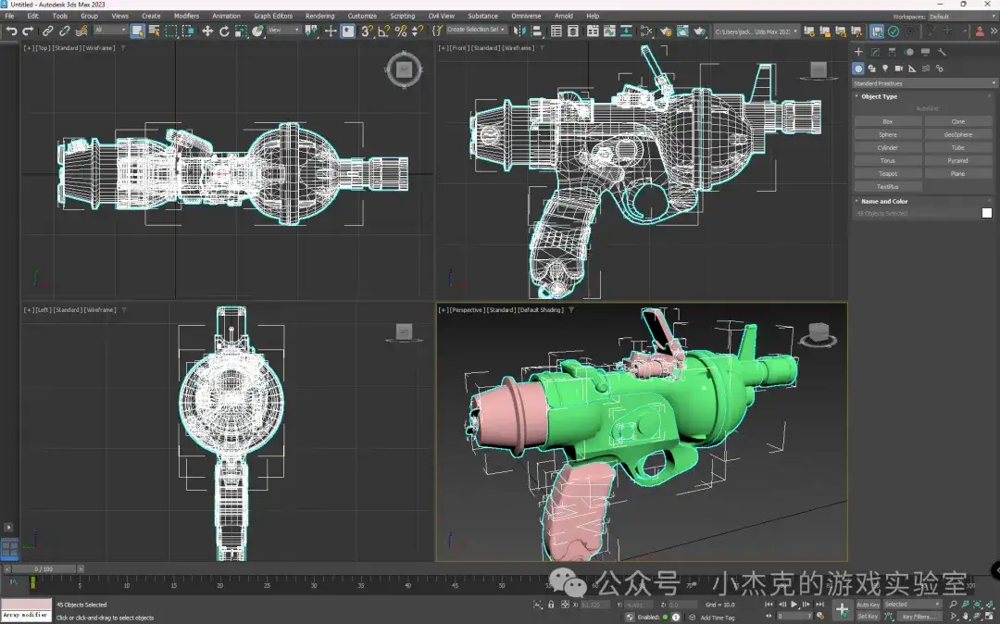
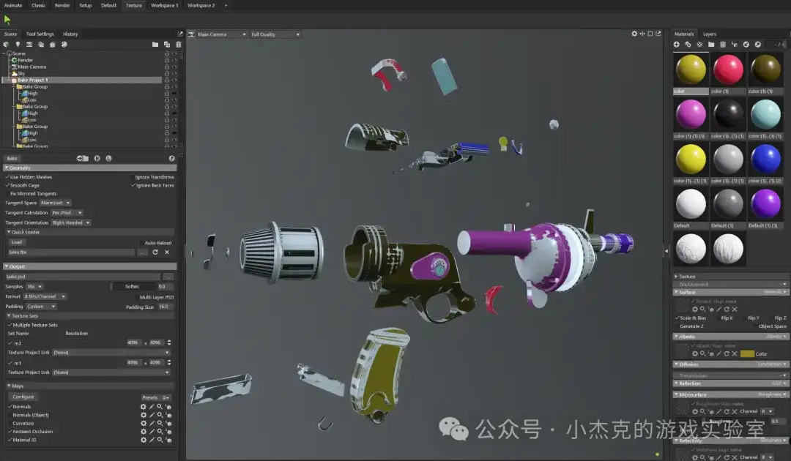
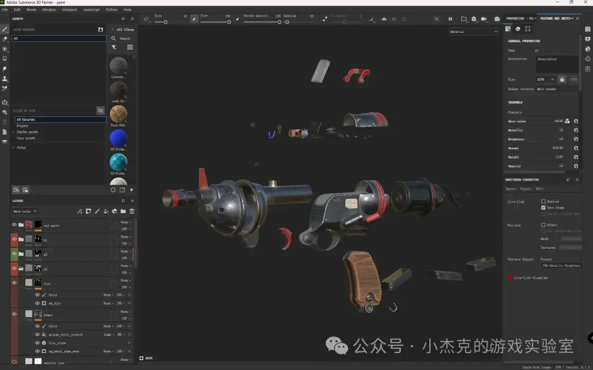
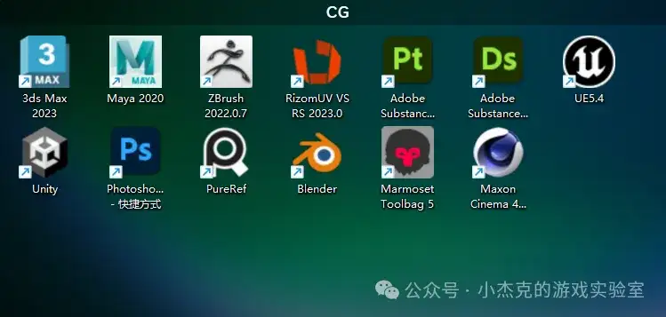

基于PBR流程的游戏3D建模
在前两期中，我们分享了3D建模的多种方法以及游戏PBR（基于物理的渲染）纹理相关知识。本期将重点介绍PBR流程的建模过程。目前网上关于PBR建模的分享视频教程种类繁多，工具使用各异，初学者常常感到眼花缭乱。本文旨在帮助大家理解高质量3D游戏资产的制作框架，从而在学习其他艺术家的制作流程时不再迷茫。
本次分享分为三部分：首先介绍3D模型的特点，然后通过复刻一把废土风格的手枪来了解次世代建模的具体流程，最后分享我学习3D游戏建模的一些心得体会。
一、PBR流程下的3D游戏模型的特点
PBR建模流程之所以复杂，主要是因为3D游戏模型有其独特的特点。与影视制作的预渲染不同（即先渲染完毕，再进行播放），游戏中的3D模型需要在实时渲染的条件下边渲染边播放。这意味着视觉效果必须快速生成并即时反馈给玩家，从而保证流畅的交互体验。为了实现这一点，一般来说，高质量的游戏需要确保至少60FPS（帧/秒）的渲染速度。而对于VR/MR/XR游戏，为了避免晕动症，渲染速度通常要求达到至少72FPS以上。那么，如何优化性能，提高渲染速度呢？为了满足这些性能要求，模型制作通常会考虑以下几个方面：
多边形数量与性能平衡: 游戏模型必须在有限的多边形数量下展现足够的视觉细节，以适应实时渲染需求，使用的优化技术包括：低多边形建模，减少计算量，保持视觉效果；用法线贴图代替更多的几何体，增强细节表现；采用LOD技术，根据视距动态切换模型的细节层次，降低远景物体的渲染负担。
贴图优化与纹理分辨率: 贴图是表现模型细节的核心，但需要在分辨率和内存占用之间找到平衡：使用合理大小的贴图，避免过大贴图带来的性能瓶颈；应用UV展开技巧，减少纹理浪费和接缝问题；选择合适的纹理压缩格式（如DDS、ASTC）以优化内存使用。
实时光照与材质效果：材质与光照效果直接影响模型的视觉表现，特别是在动态场景中：使用PBR材质，通过金属度和粗糙度定义材质的真实感；优化光照贴图或全局光照（GI）的使用，以减少实时计算；使用环境光遮蔽（AO）贴图，呈现阴影效果，减轻光遮罩计算量。
动画与绑定需求：带有骨骼绑定或动画的模型需要兼顾动作流畅性和计算性能：优化骨骼系统，减少骨骼数量，避免复杂骨骼增加负担；合理分配权重，避免冗余权重；对复杂动画序列进行压缩，减少存储占用。
硬件平台适配：不同硬件平台的计算力不同，因此需要根据平台要求进行优化：在PC设备上使用更精细的模型和材质；针对移动设备优化多边形数量、贴图分辨率和渲染技术；VR设备需要满足双目渲染要求，因此对模型优化的要求更高。
模型兼容性与游戏引擎支持：游戏模型必须与游戏引擎兼容，满足引擎的各种要求：使用支持的文件格式（如FBX、OBJ、GLTF）；校准模型在引擎中的效果，确保渲染无误。
总结来说，游戏模型制作不仅仅是视觉艺术的创作，更是技术与艺术的结合，需要充分考虑性能、细节和适配性。接下来，我们将基于这些特点，深入探讨3D游戏静态模型的制作流程（本次不涉及动画）。
二、基于PBR流程的3D建模步骤
基于PBR的3D建模流程，不仅仅涉及构建模型的形状，还需要确保材质在真实光照条件下的效果。为了帮助大家更好地理解，我将通过制作一把废土风格的手枪模型，详细讲解次世代建模的步骤。以下是整个流程的详细介绍：
1.概念设计与参考资料收集
在建模前，第一步是获取足够的参考资料。收集大量图片（如真实物品的照片、电影截图或其他游戏中的素材）来确定模型的外观、比例、细节和材质效果。参考资料的收集和管理对于制作过程至关重要。在工业化流程中，原画师会提供三视图（正视图、侧视图、俯视图），这对于建模的准确性和比例的掌控非常重要。
常用工具：PureRef是一款非常方便的参考图管理工具，能够帮助整理和浏览收集的参考图片。很多原画师和3D艺术家常使用此工具来管理参考资料。
2.中模建模
中模是3D建模的基础模型，决定了最终形态的轮廓和比例。此阶段的重点是确保模型的形状清晰，能为后续的细节雕刻和优化打下基础。我们需要注意多边形的数量和几何形状的合理性。在整个建模流程中，模型按多边形数量，会分为低模、中模和高模。低模用于游戏中的实时渲染，负责主要形状和轮廓。高模则用于细节雕刻，通常会包含更多的多边形。中模是介于两者之间的模型。下图展示的是我们使用3ds Max制作的一个枪的中模模型，它帮助我们确定了 模型的基本形状和比例。
常用工具：Maya、3ds Max和Blender是常见的建模工具，用户可以根据个人习惯选择。中模建模时，我们通常使用多边形建模方法，保持模型的灵活性。

3.高模雕刻
在这一阶段，我们将中模导入到雕刻软件中，进一步添加细节。这一过程尤为关键，因为它直接决定了最终模型的精细度。下图，是利用ZBrush雕刻废土枪的边缘，模拟焊接的效果。
常用工具：ZBrush是常见的雕刻软件，艺术家可以通过刷子、笔触等工具进行细节雕刻，如表面划痕、褶皱、焊接痕迹等。这些细节的雕刻帮助模型呈现更加真实的效果，特别是在细节丰富的硬表面（如枪械、机械等）上非常重要。

4.低模制作与UV展开
低模的制作包括对中模进行删减、优化并将其转换成低多边形模型。低模的多边形数量要足够低，以保证游戏的运行效率，但同时又要能够保留足够的形状和细节。合理的多边形分布和拓扑结构非常重要。在这个阶段，我们还需要展开UV，以便后续贴图的制作。在UV展开过程中，模型的表面被“拆解”成平面，形成一个UV图集。需要避免“接缝”问题，确保纹理能够无缝地贴合到模型表面。
常用工具：常见的建模工具可以进行UV展开。复杂的模型可以使用专业工具（如RizomUV）来进行UV展开，这样能够大大提高效率和精度。下图是RizomUV工具的界面，可以看到很多复杂的UV可以被自动摆好。

5.烘焙法线贴图和AO
这一步的关键是将高模的细节转移到低模上，以提升低多边形模型的细节表现。通过烘焙生成法线贴图和AO贴图，能有效增强低模的细节感与立体感。法线贴图：它能够模拟模型表面细节（如划痕、凹陷等表面细节），无需增加多边形数目，从而在保持低多边形的同时展现丰富的细节。AO贴图：它用于模拟物体间的阴影效果，增强模型的立体感和真实感，特别是在光线较弱的区域。在这一步，我们需要确保烘焙效果的准确性，避免出现错位或不自然的阴影。如果法线贴图或AO贴图存在瑕疵，通常需要借助绘图软件进行手动修正，以确保最终效果的精确和自然。
常见工具：Marmoset Toolbag和Substance Painter都可以用于烘焙法线和AO贴图。修改贴图可以使用Photoshop。

6.制作材质贴图
材质的表现是PBR流程中至关重要的一环，决定了模型在不同光照条件下的外观。此步骤我们将低模模型和法线贴图、OA贴图，导入Substance Painter（简称SP），并通过该工具制作材质贴图。在SP中，我们通常会制作几种基础的贴图，如BaseColor、Emissive、Roughness、Metallic等，也会在Normal贴图上添加一些表面细节。
常见工具：Marmoset Toolbag和Substance Painter是常用的烘焙法线和AO贴图的工具，能够高效地将高模细节转移到低模上。对于贴图的修改与精细调整，可以使用Photoshop等图像处理软件，进一步优化贴图效果。

7.导入游戏引擎测试
完成贴图制作后，将低模和材质贴图导入到游戏引擎中（如Unity或Unreal Engine），测试模型在实时渲染中的效果。这一步骤能够帮助我们检查光照效果、材质表现以及模型是否适应引擎的要求。检查帧数表现(FPS)，确保模型不会导致过高的渲染负担，特别是在多边形数量和纹理大小方面。
8.作品展示
最后，为了最大程度地展示模型的细节和质感，3D艺术家通常会使用专门的渲染器（如Marmoset Toolbag、V-Ray等）进行渲染。渲染器可以精准模拟光照、阴影、材质反射等效果，帮助艺术家展示模型的最终效果。如下图，在画面中，可以清晰区别不同的材质表现。


通过这些步骤，我们能够完成一个完整的基于PBR流程的3D模型制作。希望通过这一详细的过程，大家能够更加清晰地理解每个阶段的工作重点，以及如何高效地进行3D建模创作。
三、一些心得体会
经过几个月的系统学习，我对3D游戏建模有了更全面的理解，也深刻感受到3D游戏建模是一项跨学科的技能，融合了艺术、技术和创意。作为学习者，掌握正确的学习方法和策略，不仅能加速技能提升，还能让学习过程更高效。以下是我为3D游戏建模学习者提供的一些建议，希望能帮助你更快入门：
保持耐心与持续学习：3D建模不同于解题或编程，它更像是绘画的过程。上手可能很容易，但精通却需要时间和实践。刚开始时，进展可能显得缓慢，但不要气馁。坚持练习，保持对艺术和技术的好奇心，不断学习新知识，你一定能掌握这项技能。
注重艺术修养与基础知识：尽管3D建模是一项技术密集型的工作，但其核心依然是艺术。掌握透视、构图、光影、色彩和材质等基本艺术概念，能够帮助你创作出更加生动和有表现力的模型。在ArtStation等平台上欣赏经典游戏美术作品，可以激发你的艺术灵感，并提高你对美学的感知与理解。手绘是提升观察力的有效途径，它帮助你更好地理解空间感、形态及结构。比如，下图展示的是我在学习期间进行的材质绘画练习，借此提升了我对材质的观察和表达能力。

熟悉软件工具与建模概念：在学习3D建模的过程中，我们需要学习下面三类知识：1)建模基本概念，如网格、拓扑、UV和法线等，这类知识可以通过网络查询进行学习，在实践中进行理解；2)建模相关软件的使用，在实践中根据需要不断学习每个功能。下图是一些常见软件图标，供参考。3)项目流程的学习，在实践中，逐步搭建和改进自己的工作流和工具。使用不同的工具解决不同的问题。
做好笔记与总结：学习3D建模的过程充满了技术细节和艺术灵感，因此记笔记和定期总结非常有助于提高效率。记录下在学习过程中遇到的问题及其解决方法，并定期进行复习和总结，这样能帮助你更好地消化和吸收新知识。

结语
3D建模是一项结合技术与艺术的技能，从构思到呈现的每个步骤都充满挑战与创意。希望这篇文章能为你的学习旅程提供有用的指导。无论你是初学者还是有经验的创作者，保持好奇心、持续实践，并总结经验，都会帮助你不断进步。每一次挑战都带来新的成长，期待你在3D建模的世界中，创造出属于自己的精彩作品。